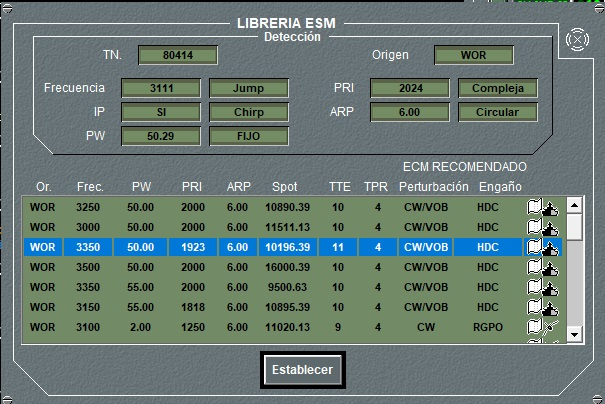

Desde este panel de detalle del ESM pueden realizarse las siguientes acciones:
- Encender / Apagar el equipo: Pulsando el botón ON / OFF. El equipo ESM siempre se encuentra encendido inicialmente, pudiendo ser apagado por el operador. En las unidades submarinas solo se puede encender el ESM si están en superficie o tienen el mástil correspondiente izado. En general, para todas las unidades, deben estar fuera de la base.
- Consultar Frecuencias: los indicadores de frecuencia muestran las frecuencias mínima y máxima de trabajo del ESM, en Megahercios.
- Activar / Desactivar Bandas: Pulsando en el botón correspondiente a cada banda, se activa (si está disponible) o desactiva ésta. Al pulsar el botón Todas, se activan (o desactivan) todas las bandas disponibles. Por defecto, inicialmente, están activas todas las bandas disponibles.
- Filtrar las detecciones: Utilizando la barra de desplazamiento, se puede filtrar la lista de detecciones por grado de amenaza (TTF), desde 0 hasta 15. Tanto en la lista de detecciones, como en la presentación táctica aparecerán únicamente aquellas detecciones cuyo TTF sea mayor o igual al seleccionado.
- Consultar Detecciones: En la lista de detecciones aparecerán todas las detecciones cuyo TTF sea mayor o igual al seleccionado en el Filtro Grado de Amenaza, hasta un máximo de 60 detecciones, ordenados de mayor a menor Grado de Amenaza y hora de detección. Los datos que aparecen en la lista para cada detección son:
- TN: Número de traza de la detección.
- Origen: C/D o WOR
- Estado: A (Activa), D (Desaparecida), L (Lock-On)
- Tiempo: Hora, minuto y segundo de la adquisición de la detección.
- H. Per.: Hora, minuto y segundo de la pérdida de la detección (solo cuando Estado es D)
- Dem.: Demora de la detección, en grados. Este dato de demora tiene un cierto error que depende de la configuración del equipo en Preparación.
- Calidad: Saturada o Afinada.
- Pot.: Potencia de la emisión detectada L (low), M (medium) o H (high).
- Frec.: Frecuencia de la detección, en Megahercios. Este dato tiene un cierto error que depende de la configuración del equipo (preparación). En el caso de que la emisión sea de frecuencia ágil, ésta solo se detectará si el ESM tiene capacidad para detectar frecuencia ágil, y se indica con la letra A.
- PRI: PRI de la detección, en microsegundos. Este dato de PRF tiene un cierto error que depende de la configuración del equipo (preparación). En el caso de que la emisión sea de PRI ágil, ésta solo se detectará si el ESM tiene capacidad para detectar PRIs ágiles y se indica con la letra A.
- PW: PW de la detección, en microsegundos. Este dato de PW tendrá un cierto error que depende de la configuración del equipo (preparación). En el caso de que la emisión tenga modulación intrapulso, ésta solo se detectará si el ESM tiene capacidad para detectar emisiones con modulación intrapulso, y se indicará con la letra M. En el caso de que la emisión sea de PW ágil, ésta solo se detectará si el ESM tiene capacidad para detectar PWs ágiles y se indica con la letra A.
- ARP: ARP de la detección, en rpm. Este dato solo se presenta en equipos ESM con capacidad para detectar el ARP, y tiene un cierto error que depende de la configuración del equipo en Preparación. Si además tiene capacidad de detectar ARP compleja, podrá detectar el Tipo de Radar. El Tipo de Radar también podrá ser detectado si no tiene capacidad de detectar ARP compleja pero el Radar no está trabajando en ARP variable. En caso de haber podido detectar el Tipo de Radar, se mostrará al operador lo siguiente, según el tipo de radar detectado:
- Lock-on → “valor ARP” L
- Sectorial → “valor ARP” S
- Circular → “valor ARP” C
- Cónico → “valor ARP” Co
- Raster → “valor ARP” R
- Complejo → “valor ARP” Cm
- Helicoidal → “valor ARP” H
- TTF: Índice de amenaza de la detección, de 0 a 15, calculada de la mejor candidata encontrada en librería o de la seleccionada por el operador (ver apartado de librería más adelante). En caso de no existir librería, se muestra un ‘-‘.
Para emisiones detectadas de equipos clasificados, por motivos de confidencialidad (siempre que el nivel de clasificación de los datos del equipo emisor sean superior al de la unidad), se ocultan los siguientes parámetros: Frecuencia, PRF, PW y ARP. Ver Anexos – Seguridad. En este caso, si además el ESM no tiene Capacidad Identificación, en el campo Spot se mostrara el Tipo de Radar detectado, con las siguientes abreviaturas:
- Radar de Navegación: AIR
- Radar de Exploración Superficie: SFC
- Radar de Exploración Aérea: NAV
- Dirección de Tiro: FCS
- Radar de Aéreo Interceptación: ACRFT
- Radar de Aeronave: AEW
- Seeker: SKR
La detección de emisiones de iluminación y lock-on son siempre advertidas mediante una alerta específica visual (en el panel general) y sonora.
Para TACAN y perturbaciones de ECM detectadas no se muestra la paramétrica, sino que se muestra en el campo Spot la palabra “TACAN” o “P.ECM” respectivamente si la detección es del bando propio, y “UNKNOWN” en caso contrario.
Para ECM, cuando se detecta que un ECM está realizando técnicas de engaño sobre un radar, se muestra la paramétrica del radar engañado, de acuerdo con la efectividad de la técnica, de tal modo que mientras más efectiva sea la técnica menor será el error en los parámetros mostrados.
Pulsando el botón Librería se abre el panel de Librería ESM.

En la parte superior de la ventana se muestran los datos de la detección con mayor detalle en cuanto a los tipos de agilidad y de modulación intrapulso.
En la parte inferior se muestra la lista de spot modes de librería cuyos parámetros coinciden mejor con los de la detección. Para determinar esta lista, primero se identifican los spot modes de la librería cuyas notaciones son idénticas a las de la detección, descartándose el resto. Posteriormente se comparan los valores numéricos de la frecuencia, ancho de pulso, PRI y ARP (con un cierto margen configurable) de estos Spot Modes con los de la detección. El número de coincidencias (FIT) determina el orden en el que se presentan los Spot Modes en la lista, de 4 a 1. Por último, los Spot Modes que tengan el mismo FIT se ordenan por su índice de amenaza (suma de TTE y TPR, parámetros que se explican a contunuación).
- Origen: C/D o WOR
- Frecuencia
- Ancho de Pulso PW
- Intervalo de Repetición de Pulso PRI
- Itervalo de Repetición de pulso de azimut ARP
- Spot: Número de Spot del emisor asignado en la librería.
- TTE: Indice de amenaza del radar correspondiente al Spot Mode, extraido de los datos de preparación. Cuando el radar está en Lock-On o Iluminación, su valor es siempre 15.
- TPR: Indice de amenaza particular para el Spot Mode, calculado con un algoritmo simple en función de las notaciones activadas.
- Perturbación: Técnica de Perturbación recomendada. Esta técnica se determina con los datos en preparación para el radar correspondiente al Spot Mode (susceptibilidad) y las capacidades del equipo de ECM disponible en la unidad, y puede afinarse mediante una tabla en configuración que determina el efecto de las diferentes notaciones en las técnicas de perturbación.
- Engaño: Técnica de Engaño recomendada. Se determina de forma equivalente a la de Perturbación.
- Símbolo de categoría e identidad del Spot Mode, extraído de los datos de la librería. El color de la bandera indica la identidad, rojo (H), azul (F) y blanco (HOF) y la categoría viene expresada por el icono, e indica si es un radar aéreo, de base, helicóptero, submarino, de superficie o terrestre.
Estos datos de librería no se refrescan continuamente, por lo que, para actualizarlos, es necesario cerrar el panel y pulsar de nuevo el botón Librería en el panel del ESM.